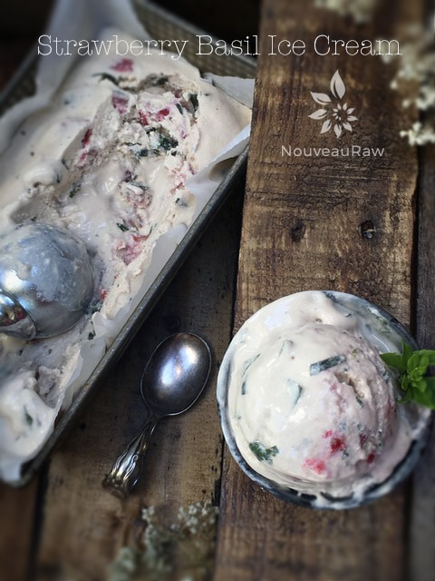
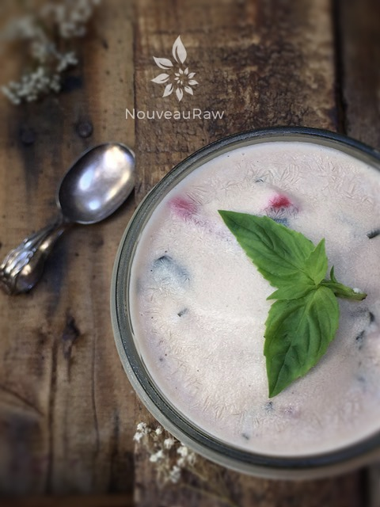
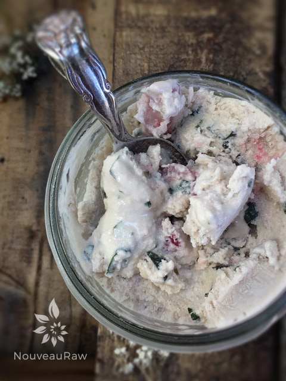
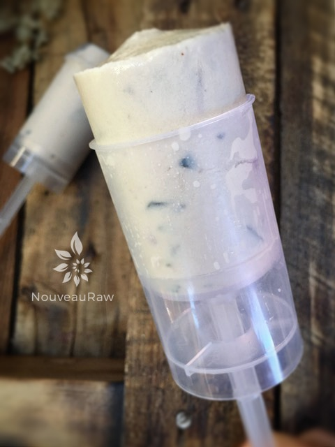

Strawberry Basil Ice Cream

~ raw, vegan, gluten-free ~
I have started a craving within myself…the craving of making raw ice creams! So this sent me to the Internet to see what exciting recipes I may find.
In the cooking world of recipes, there are hundreds of unique and some not so unique recipes. Some made my mouth water, some make my lips pucker and some well, just didn’t quite do it for me.
But the beauty of being able to create recipes is that you can give your taste buds and desires permission to play. So I decided to use this recipe post as a looking eye-glass into my thought process on how to convert an existing recipe over to your own. First, we need to look over the cooked/processed version… we will be making the raw version.
Cooked Version Ingredients:
- 2 cups strawberries, raw
- 1/4 cup fresh basil
- 1 cup heavy cream
- 1 cup milk
- 1 cup half and half
- 3/4 cup granulated sugar
- 2 teaspoons pure vanilla extract
- Dash salt
Now we need to break it down… To convert this recipe to raw, we need to look at the role of the ingredients. The fruit part is easy to convert. Strawberry for strawberry. The milk and 1/2 & 1/2 offer two things to the recipe; a form of fat and a creaminess and liquid of course.
In the raw world, we often look to nuts or young coconuts to use as a replacement. There are many other food items that replace fats and creaminess such as avocados, but we need to think of what would hold up nicely to being frozen or what color they will lend a recipe, so therefore nuts or coconut are our number one choice.
Nut butters can work great in recipes as well. Sugar is easy to convert over to raw. There are many alternatives; we just have to decide what flavor we want to impart. Because we want creamy ice cream and we are not heating it to break down any sugar granules I recommend a liquid sweetener or a sweetener that may come in a fine powder form such as lucuma.
Let’s break them down a little bit:
- Agave (sweeter than honey, which means you use less volume) Doesn’t alter the flavor of a dish. Comes raw.
- Honey comes raw, but it isn’t vegan. You pick your battle. There are many slight hints of flavor in honey, it all depends on what you purchase, but the taste of honey is rather mild. It takes more honey to get the same level of sweetness as agave.
- Yacon comes raw. To me, it has a hint of a molasses flavor and is very thick.
- Coconut Nectar is raw and has a deeper flavor as well, again to me, a tad like molasses.
- Lucuma tastes a little bit like shortbread.
Ok, we have figured out the fruit, the fat, the creaminess, and the sweetener, all that remains are the “spices.”
Cooked Version now converted to a Raw Version:
- 2 cups organic strawberries, diced
- 3/4 cup fresh basil, finely chopped
- 2 cups raw cashews
- 2 cups water
- 1 1/4 cup raw almond milk
- 1/2 – 3/4 cup raw coconut nectar
- 1 Tbsp vanilla extract
- 1/8 tsp Himalayan pink salt
Preparation:
- Place diced strawberries and finely chopped basil in a bowl and let macerate (become softened or broken up by soaking) in the refrigerator for one hour or overnight.
- In a high-powered blender, combine the cashews and water, blend until creamy and no grit is detected.
- Add the almond milk, sweetener, vanilla, and salt. Blend until incorporated.
- I made my almond milk with the following ratios: blend 1 cup almonds + 1.5 cups water + 2 dates.
- Pour in the strawberries, basil, and the remaining juices and stir until combined. Don’t blend. We want strawberry chunks.
- Place the blender carafe in the fridge or freezer for 1 hour.
- If chilled in the refrigerator it can stay there for up to 8 hours. But don’t leave it in the freezer for more than an hour or it will freeze solid.
- Once chilled pour the batter into the ice cream maker and follow the manufacturer’s instructions.
- Enjoy right away or place the ice cream in a freezer-safe container(s).
- It is best to take the ice cream out of the freezer about 10 minutes ahead of time, so it can have a chance to soften.
- Eat within 1 month.
Freezing Suggestions for Ice Cream:
-
Use an ice cream machine. Follow the manufactures directions.
-
Freeze in popsicle molds or 3 oz Dixie cups with a popsicle stick inserted.
-
-
Store the ice cream in the very back of the freezer, as far away from the door as possible. Every time you open your freezer door you let in warm air. Keeping ice cream way in the back and storing it beneath other frozen-sold items will help protect it from those steamy incursions.
-
Ice cream is full of fat, and even when frozen, fat has a way of soaking up flavors from the air around it—including those in your freezer. To keep your ice cream from taking on the odors, use a container with a tight-fitting lid. For extra security, place a layer of plastic wrap between your ice cream and the lid.
-
To soften in the refrigerator, transfer ice cream from the freezer to the refrigerator 20-30 minutes before using. Or let it stand at room temperature for 10-15 minutes.
-
Wish to make your own raw ice cream, wonder what machine I might recommend, and more? Click (
here) to check out the Reference Library!

Another great way to store ice cream is in a single serving, freezer-safe mason jars. Perfect for portion control and no extra dirty dishes.


Push pops! Another great serving suggestion. Link above.
© AmieSue.com